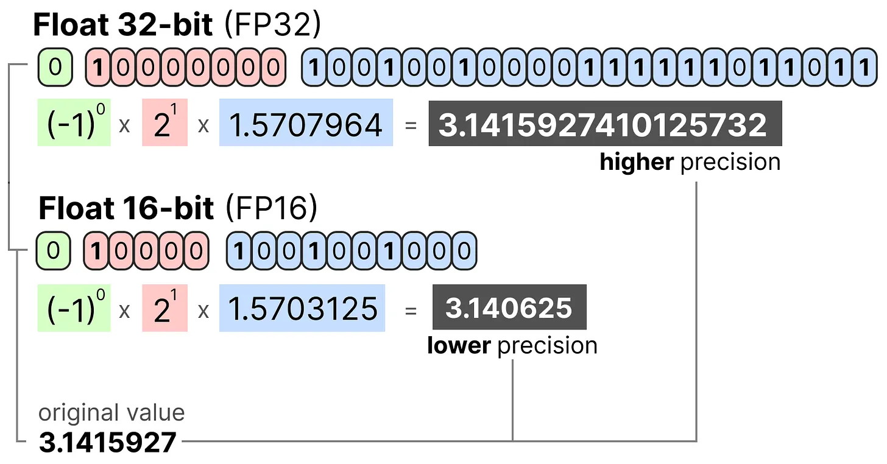
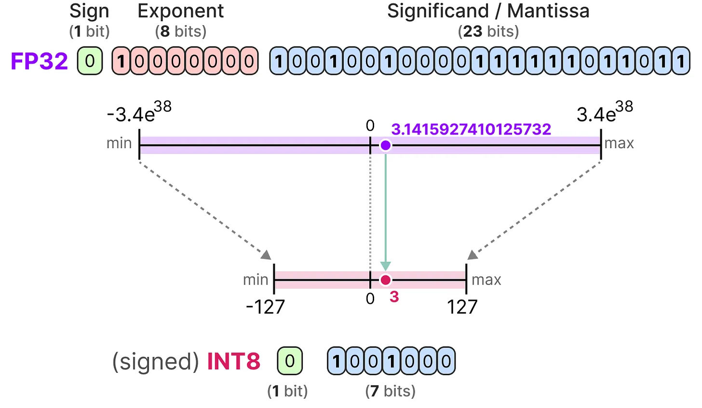
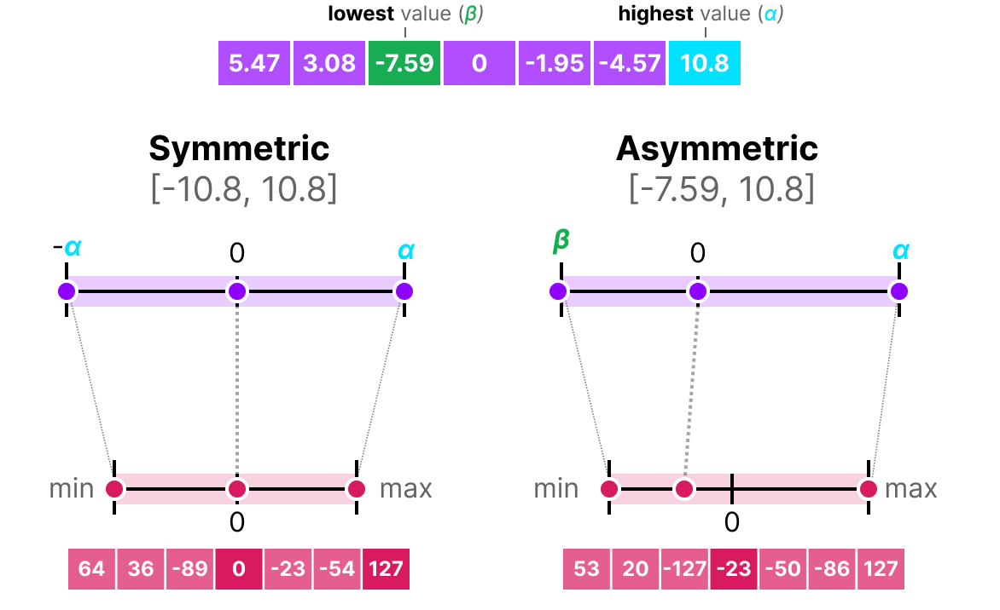
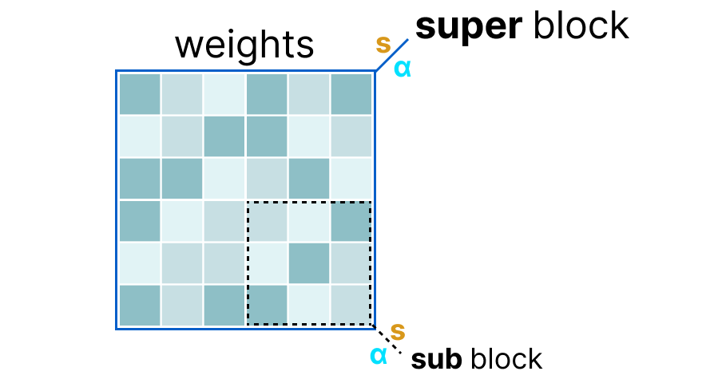
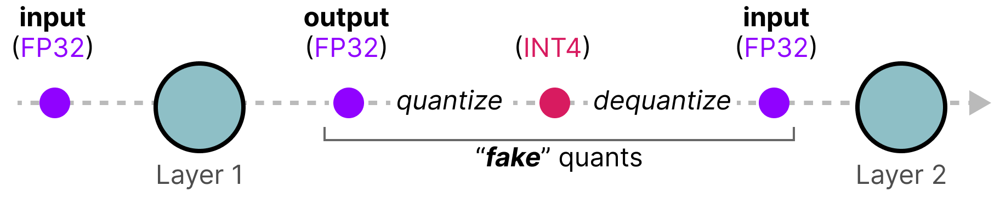
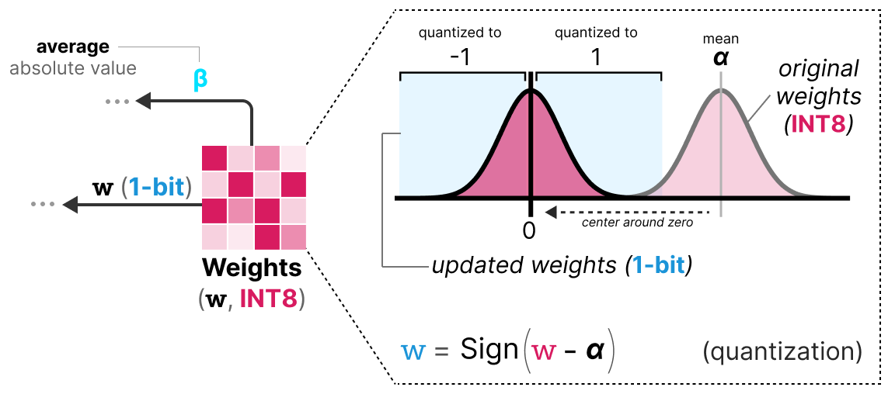

模型量化#
深度学习模型的规模和性能不断增长。以大型语言模型（LLM）为例，最先进的开源模型（如 Llama 3.1）已拥有数千亿参数。
如此庞大的模型无法在单个 GPU 上运行。即使使用市场上最强大的 GPU（如 H100，拥有 80GB 显存），也需要多个 GPU 才能进行推理，训练则需要更多。
实践表明，模型参数越多，性能越好。因此我们不希望缩小模型规模，而是希望减少其内存占用。
本课程主要参考以下两篇文章：
QLoRA 的详细解释 文中的图片也来源于这两篇文章。
计算机中如何表示数字？#
在计算机中，浮点数使用特定位数表示。IEEE 754 标准定义了如何用三部分（符号位、指数位和尾数位）表示一个数。
以下是 FP16（16 位）浮点数的表示示例：

符号位决定数的正负，指数位表示小数点前的数字，尾数位表示小数点后的数字。以下是将 FP16 表示转换为实际数值的示例：

通常，使用的位数越多，数值的精度越高，可表示的范围也越大。例如，FP16 和 FP32 的精度对比如下：

需要注意的是，评估数值表示的两个关键指标是：
动态范围（Dynamic Range）：表示可表示的数值范围
精度（Precision）：表示相邻数值之间的最小差异
指数位越多，动态范围越大；尾数位越多，精度越高（相邻数值间隔越小）。
在深度学习中，通常优先选择 BF16 而非 FP16。BF16 具有更大的指数位（动态范围更大），但精度较低。
下图展示了它们的区别：

现在我们理解了浮点数精度的概念，可以计算模型在不同精度下的内存占用。在 FP32 下，每个数占用 32 位（即 4 字节，1 字节 = 8 位）。模型的内存占用可通过以下公式计算： \(memory= \frac{n_{bits}}{8} \times n_{params}\)
以一个 700 亿参数的模型为例，在不同精度下的内存占用如下：
FP64（双精度）：\(\frac{64}{8} \times 70B = 560GB\)
FP32（单精度）：\(\frac{32}{8} \times 70B = 280GB\)
FP16（半精度）：\(\frac{16}{8} \times 70B = 140GB\)
可以看到，即使使用半精度（FP16），模型仍需 140GB 内存，相当于 2 块 H100 GPU 的显存。
注意：这里讨论的是推理阶段的精度。在训练阶段，由于需要保存激活值以进行梯度下降，内存占用会更高（详见后续 QLoRA 部分）。
量化简介#
量化的目标是将模型从高精度（如 FP32）降低到低精度（如 INT8），从而减少内存占用。
注意：INT8 是用 8 位表示 -127 到 127 的整数。

减少位数会导致精度损失。以下图片可以直观展示这一点：

可以看到图片出现“颗粒感”，这是由于可用颜色数量减少导致的。我们的目标是减少位数的同时，尽可能保留原始图片的精度。
量化主要有两种方法：
对称量化
非对称量化
常见精度类型简介#
FP16：相较于 FP32，精度和动态范围均降低。

BF16：精度显著降低，但动态范围与 FP32 相同。

INT8：使用整数表示。

对称量化#
对称量化将原始浮点数的取值范围对称地映射到量化后的取值范围，即浮点数中的 0 映射到量化后的 0。

最常用的对称量化方法是 absmax（绝对值最大量化）。该方法使用数据的绝对最大值进行映射：

量化公式如下（设 \(b\) 为目标位数，\(\alpha\) 为数据的绝对最大值）：
计算缩放因子： \(s=\frac{2^{b-1}-1}{\alpha}\)
量化操作： \(x_{quantized}=round(s \times x)\)
反量化（恢复 FP32）： \(x_{dequantized}=\frac{x_{quantized}}{s}\)
需要注意的是，反量化后的值与原始值并不完全相同：

量化误差可视化：

非对称量化#
非对称量化不以 0 为对称中心。它将原始浮点数的最小值 \(\beta\) 和最大值 \(\alpha\) 映射到量化范围的最小值和最大值。最常用的方法是 零点量化（zero-point quantization）：

由于 0 的位置发生了变化，因此称为非对称量化。我们需要计算 零点（zero-point） 以实现线性映射。
量化步骤如下（假设量化到 INT8）：
计算缩放因子： \(s=\frac{128 - (-127)}{\alpha - \beta}\)
计算零点： \(z=round(-s \times \beta) - 2^{b-1}\)
量化操作： \(x_{quantized}=round(s \times x + z)\)
反量化： \(x_{dequantized}=\frac{x_{quantized}-z}{s}\)
两种方法各有优缺点。以下是它们在任意输入 \(x\) 下的表现对比：

裁剪与范围调整#
上述方法的一个主要缺点是对 异常值（outliers） 不鲁棒。假设向量 \(x\) 包含以下值： [-0.59, -0.21, -0.07, 0.13, 0.28, 0.57, 256] 直接量化会导致除 256 外的所有值被映射到相同的量化值：

这会造成巨大的信息损失，因此需要特殊处理。
实际应用中，我们可以通过 裁剪（clipping） 限制浮点数的范围。例如，将值限制在 [-5, 5] 范围内，超出该范围的值将被映射到量化范围的最大值或最小值（INT8 中为 127 或 -127）：

裁剪减小了非异常值的误差，但会增大异常值的误差（这可能带来新的问题）。
校准#
前面我们任意选择了 [-5, 5] 作为量化范围。实际上，这个范围是通过 校准（calibration） 方法确定的。校准的目标是找到一个能最小化整体量化误差的取值范围。不同类型的参数（权重、激活值等）采用的校准方法也不同。
权重与偏置的校准： 权重和偏置是模型训练后固定的静态值。由于权重数量远多于偏置，通常我们只量化权重，而保留偏置的原始精度。
权重的校准方法包括：
手动选择输入范围的百分比
最小化原始权重与量化权重的均方误差（MSE）
使用 KL 散度最小化熵差
百分比方法与我们之前介绍的类似，而后两种方法更严谨且有效。
激活值的校准： 激活值依赖于模型输入，且在每层后动态更新，因此难以直接量化。这需要在推理过程中实时观测。 这引出了两种主要的量化方法：
训练后量化（PTQ）：在模型训练完成后进行
量化感知训练（QAT）：在训练或微调过程中同时进行量化
训练后量化（PTQ）#
最常见的量化方法是 训练后量化（PTQ），因为它无需重新训练或微调模型。
权重的量化可采用对称或非对称量化。
激活值的量化较为复杂，因为其取值范围在训练后无法预知。激活值的量化有两种形式：
动态量化
静态量化
动态量化#
动态量化在数据通过某一层后，收集该层的激活值，并实时计算 零点（zeropoint） 和 缩放因子（scale factor） 进行量化：

每个层有独立的零点和缩放因子，因此量化方式因层而异：

注意：动态量化发生在 推理过程中。
静态量化#
与动态量化不同，静态量化 不在推理时计算零点和缩放因子。而是在推理前，使用一个 校准数据集 预先计算这些参数。该数据集应能代表实际数据分布，用于估计激活值的统计分布：

通过校准数据集收集所有层的激活值后，计算出的缩放因子和零点将用于后续所有激活值的量化。
动态量化与静态量化的区别#
动态量化：因每层独立计算缩放因子和零点，精度较高，但会增加推理时间。
静态量化：精度略低，但推理速度更快。
PTQ：4 位量化#
理想情况下，我们希望将量化精度降至 4 位（而非 8 位），但直接应用之前的方法会导致误差剧增。
目前有几种方法可将位数降至 2 位（建议保持在 4 位）。其中两种主流方法为：
GPTQ（仅使用 GPU）
GGUF（可部分使用 CPU）
GPTQ 方法#
GPTQ 是目前最流行的 4 位量化方法。其核心思想是 逐层独立进行非对称量化：

在量化过程中，权重会转换为 Hessian 矩阵的逆矩阵（损失函数的二阶导数），以评估模型输出对每个权重变化的敏感度。Hessian 中值较小的权重更为重要，因为其微小变化会显著影响模型输出：

接下来，我们会对权重进行 量化→反量化，并计算 量化误差。该误差结合 Hessian 矩阵，用于加权调整其他权重，以保持模型整体功能：

加权误差计算公式： \(q=\frac{x_1-y_1}{h_1}\) 其中：
\(x_1\)：量化前的原始值
\(y_1\)：量化+反量化后的值
\(h_1\)：Hessian 矩阵中对应的值
然后，我们将该加权误差重新分配到同一行的其他权重（如 \(x_2\)）： \(x_2 = x_2 + q \times h_2\)

该过程会迭代，直到所有权重完成量化。由于权重间相互关联，某个权重的量化误差可通过调整其他权重（基于 Hessian）得到补偿，因此该方法效果良好。
GGUF 方法#
虽然 GPTQ 能有效在 GPU 上运行 LLM，但对于特别大的模型，GPU 显存仍可能不足。GGUF 方法允许将 LLM 的任意层移动到 CPU，从而同时利用 内存（RAM） 和 显存（VRAM）。
该方法会根据目标量化位数频繁调整，其基本流程如下：
将某一层的权重划分为 超级块（super block），每个超级块再细分为 子块（sub block）
对每个块（超级块及子块）提取 缩放因子 \(s\) 和 absmax 值 \(\alpha\)

子块的缩放因子 \(s\) 会使用超级块的缩放因子进行 二次量化，这种方法称为 分块量化（block-wise quantization）。
注意：通常超级块的量化精度高于子块（例如超级块用 8 位，子块用 4 位）。
量化感知训练（QAT）#
与训练后量化（PTQ）不同，量化感知训练（QAT） 在训练过程中同时进行量化，并将量化参数（如缩放因子）纳入反向传播优化：
由于量化在训练阶段就被考虑在内，模型能主动适应量化带来的限制，因此 QAT 通常比 PTQ 更精确。
QAT 的具体实现方式： 在训练过程中引入 伪量化（fake quantization） 操作（例如 32 位→4 位→32 位），模拟实际量化效果：

这种方式使模型在训练时就“感知”到量化带来的限制，从而调整权重更新，以优化量化后的性能。
可以这样理解：QAT 会引导模型收敛到 宽阔的极小值点，这些点对量化误差不敏感；而传统训练可能收敛到 狭窄的极小值点，量化后误差较大：

实践中，传统训练的模型在高精度（FP32）下损失更低，但一旦量化，QAT 训练的模型性能会显著优于 PTQ 量化的模型。
BitNet：1 位量化#
将模型量化到 1 位 是减少模型大小的极致方案——每个权重仅用 0 或 1 表示，这听起来难以置信。
BitNet 提出用 -1 或 1 表示权重，并将 Transformer 中的线性层替换为 BitLinear 层：

BitLinear 层的工作原理与传统线性层相同，唯一区别是：
权重用 1 位 表示（-1 或 1）
激活值用 INT8 表示
训练过程中同样使用 伪量化，使模型适应 1 位权重的限制：

BitLinear 层的工作流程：
权重量化 训练时权重以 INT8 存储，并通过 signum 函数 量化为 1 位：
小于 0 → -1
大于 0 → 1 该函数将权重分布中心对齐到 0。

同时提取 平均绝对值 \(\beta\) 用于后续反量化。
激活值量化 使用 absmax 量化 将 FP16 激活值转换为 INT8，并存储 最大绝对值 \(\alpha\) 用于反量化。
反量化 利用保存的 \(\alpha\) 和 \(\beta\)，将 1 位权重和 INT8 激活值恢复为 FP16 精度。
整个过程简单高效，使模型权重仅用 -1 和 1 表示。研究发现，该方法在 大于 300 亿参数 的深度模型上效果良好，但对小型模型的性能有限。
BitNet 1.58：引入零值！#
为改进原始 BitNet（尤其是小型模型的性能），BitNet1.58 在 -1 和 1 的基础上 引入了 0 。虽然看似微小，这一改动显著提升了模型表现。
注：因 \(log_2(3)=1.58\)，该方法被称为 1.58 位量化（3 种取值：-1、0、1）。
为何 0 如此关键？ 从矩阵乘法的基础出发： 矩阵乘法 = 逐元素乘法 + 求和。原始 BitNet 仅能选择“加”或“减”操作，而引入 0 后，可实现：
1：加该值
0：忽略该值
-1：减该值
这种“过滤”机制极大改善了表示能力。
1.58 位量化的实现： 采用 absmean 量化（absmax 的变体），基于 平均绝对值 \(\alpha\) （而非最大值）将权重四舍五入到 -1、0 或 1：

仅这两项改进（三值表示 + absmean 量化）就使 BitNet 性能显著提升，即使在极低位数下仍保持良好表现。
Fine-Tuning des modèles de langages#
Lorsque nous avons calculé la VRAM nécessaire pour un modèle, nous avons regardé uniquement pour l’inférence. Si l’on souhaite entraîner le modèle, la VRAM nécessaire est beaucoup plus importante et va dépendre de l’optimizer que l’on utilise (voir cours sur les optimizers). On peut alors imaginer que les LLM ont besoin d’une quantité énorme de mémoire pour être entraînés ou fine-tunés.
Pour réduire cette nécessité en mémoire, des méthodes de parameter efficient fine-tuning (PEFT) ont été proposées et permettent de ne réentraîner qu’une partie du modèle. En plus de permettre de fine-tuner les modèles, cela a également pour effet d’éviter le catastrophic forgetting car on entraîne uniquement une petite partie des paramètres totaux du modèle.
Il existe de nombreuses méthodes pour le PEFT : LoRA, Adapter, Prefix Tuning, Prompt Tuning, QLoRA, etc.
L’idée avec les méthodes de type Adapter, LoRA et QLoRA est d’ajouter une couche entraînable permettant d’adapter la valeur des poids (sans avoir besoin de réentraîner les couches de base du modèle).
LoRA#
La méthode LoRA (low-rank adaptation of large language models) est une technique de fine-tuning permettant d’adapter un LLM à une tâche ou un domaine spécifique. Cette méthode introduit des matrices entraînables de décomposition en rang à chaque couche du transformer, ce qui réduit les paramètres entraînables du modèle car les couches de base sont frozen. La méthode peut potentiellement diminuer le nombre de paramètres entraînables d’un facteur 10 000 tout en réduisant la VRAM nécessaire pour l’entraînement d’un facteur allant jusqu’à 3. Les performances des modèles fine-tunés avec cette méthode sont équivalentes ou meilleures que les modèles fine-tunés de manière classique sur de nombreuses tâches.

Au lieu de modifier la matrice \(W\) d’une couche, la méthode LoRA ajoute deux nouvelles matrices \(A\) et \(B\) dont le produit représente les modifications à apporter à la matrice \(W\). \(Y=W+AB\) Si \(W\) est de taille \(m \times n\), alors \(A\) est de taille \(m \times r\) et \(B\) de taille \(r \times n\), où \(r\) est le rang qui est bien plus petit que \(m\) ou \(n\) (ce qui explique la diminution du nombre de paramètres). Pendant l’entraînement, seulement \(A\) et \(B\) sont modifiés, ce qui permet au modèle d’apprendre la tâche spécifique.
QLoRA#
QLoRA est une version améliorée de LoRA qui permet d’ajouter la quantification 4-bit pour les paramètres du modèle pré-entraîné. Comme nous l’avons vu précédemment, la quantification permet de réduire drastiquement la mémoire nécessaire pour faire tourner le modèle. En combinant LoRA et la quantification, on peut maintenant imaginer entraîner un LLM sur un simple GPU grand public, ce qui paraissait impossible il y a encore quelques années.
Note : QLoRA quantifie les poids en Normal Float 4 (NF4), qui est une méthode de quantification spécifique aux modèles de deep learning. Pour en savoir plus, vous pouvez consulter cette vidéo au temps indiqué. Le NF4 est conçu spécifiquement pour représenter des distributions gaussiennes (et les réseaux de neurones sont supposés avoir des poids suivant une distribution gaussienne).
QLoRA est une version améliorée de LoRA qui permet d’ajouter la quantization 4-bit pour les paramètres du modèle pré-entrainé. Comme nous l’avons vu précédemment, la quantization permet de réduire drastiquement la mémoire nécessaire pour faire tourner le modèle. En combinant LoRA et la quantization, on peut maintenant imaginer faire entraîner un LLM sur un simple GPU grand public ce qui paraissait impossible il y encore quelques années.
Note : QLoRA quantize les poids en Normal Float 4 (NF4) qui est une méthode de quantization spécifique aux modèles de deep learning. Pour en savoir plus, vous pouvez consulter cette vidéo au temps indiqué. Le NF4 est conçu spécifiquement pour représenter des distributions gaussiennes (et les réseaux de neurones sont supposés avoir des poids suivants une distribution gaussienne).